Recettes — les onze nouvelles photos, dans leurs vrais cadres
31/10/2026 dans la nuit · version 5669b89d2 de la branche Recettes · captures WebKit (moteur de Safari), iPhone émulé, sur l'aperçu de la branche — pas un iPhone réel · rien n'est publié en production.
Chaque photo est montrée là où elle s'affiche : l'en-tête de la fiche au téléphone (un cadre en hauteur, 390 × 488, que l'en-tête de Pulse et le titre recouvrent en partie), la vignette des listes, et l'en-tête de la fiche au bureau. À côté : les ingrédients de la fiche, et ma relecture de chaque photo contre eux.
Bilan : une réserve nette, trois légères, sept photos sans réserve. La réserve nette porte sur le curry de haricots rouges (des carottes qui ne sont pas dans la recette). Aucune de ces photos ne part en production sans ton feu vert.
Curry de poulet au beurre de cacahuète
Ce que montrent les cadres
Poulet en sauce, piment rouge, coriandre, riz, dans les trois cadres.
Aucune réserve. Le yaourt est fondu dans la sauce, il ne se voit pas : c'est normal.
Les ingrédients de la fiche
- 4blancs de pouletsans peau, en morceaux
- 5 c. à s.beurre de cacahuète
- 200 gyaourt grec
- 1piment rougegros, épépiné
- 10 ggingembrefrais, un demi-doigt environ
- 1 gousseailgrosse
- 1 bottecoriandrepetite
- 1 c. à s.huile de tournesolsouvent au placard
- 150 mlbouillonde volaille
- 280 griz basmati
Bar croustillant, gingembre, ail et piment


Ce que montrent les cadres
Au bureau et en vignette : le poisson, sa peau, la julienne de gingembre et d'oignon nouveau, le riz.
Réserve légère : au téléphone, le haut du cadre montre surtout le riz et la julienne ; le poisson passe en partie sous le titre. À recadrer vers le bas.
Les ingrédients de la fiche
- 840 gbar6 filets d'environ 140 g, avec la peau, écaillés
- 30 ggingembreun gros morceau environ, en allumettes
- 3piments rougesgros, épépinés, en fines lanières
- 3 c. à s.huile de tournesolsouvent au placard
- 3 goussesailen lamelles
- 1 botteoignon nouveauen longues lanières
- 1 c. à s.sauce soja
- selsouvent au placard
- poivresouvent au placard
- 420 griz basmati
Pilons de poulet laqués


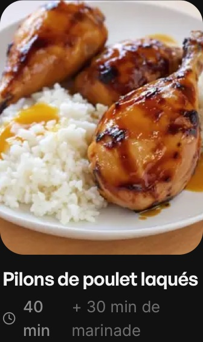

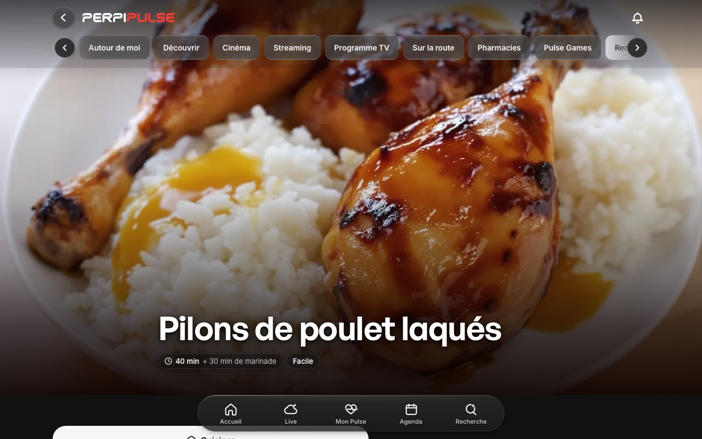
Ce que montrent les cadres
Pilons laqués, riz ; des filets de laque orangée coulent sur le riz.
Aucune réserve.
Les ingrédients de la fiche
- 8pilons de poulet
- 2 c. à s.sauce soja
- 1 c. à s.miel
- 1 c. à s.huile d'olivesouvent au placard
- 1 c. à c.concentré de tomate
- 1 c. à s.moutardede Dijon
- 280 griz basmati
Bœuf Stroganoff et tagliatelles


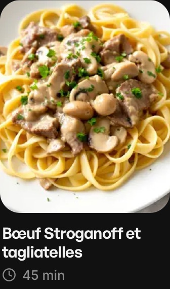

Ce que montrent les cadres
Bœuf, champignons, sauce à la crème, tagliatelles, persil.
Aucune réserve.
Les ingrédients de la fiche
- 500 gbœuffilet, en lanières
- 250 gchampignonémincés
- 150 gcrème fraîche
- 1oignonémincé
- 1 c. à s.huile d'olivesouvent au placard
- 1 gousseail
- 1 c. à s.beurre
- 1 c. à s.farine
- 1 c. à c.moutardeforte
- 100 mlbouillonde bœuf · souvent au placard
- ½ bottepersilpetite, hachée
- selsouvent au placard
- poivresouvent au placard
- 400 gpâtes fraîchestagliatelles aux œufs
Ratatouille


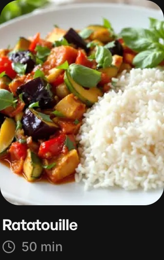

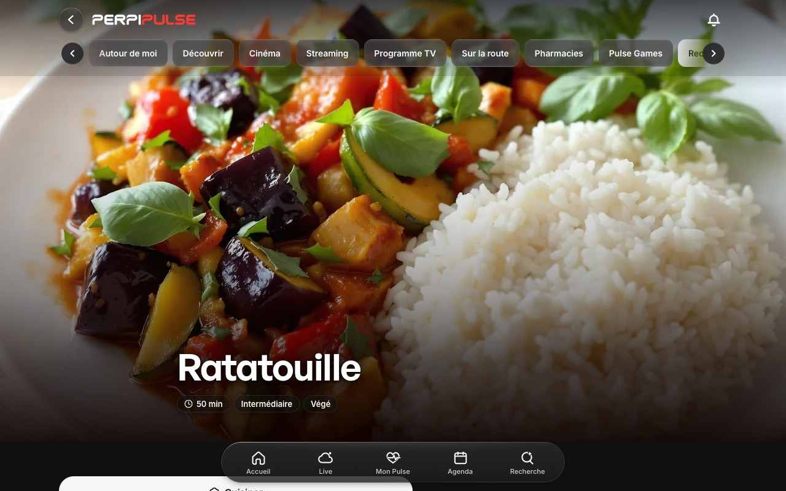
Ce que montrent les cadres
Aubergine, courgette, poivrons, tomate, basilic, riz.
Aucune réserve.
Les ingrédients de la fiche
- 2auberginesgrosses
- 4courgettespetites
- 2poivronsrouges ou jaunes
- 4tomatesgrosses, bien mûres
- 5 c. à s.huile d'olivesouvent au placard
- 1 bottebasilicpetite
- 1oignonfinement émincé
- 3 goussesailécrasées
- 1 c. à s.vinaigrede vin rouge
- 1 c. à c.sucre
- selsouvent au placard
- poivresouvent au placard
- 280 griz long
Latkes de betterave, yaourt à la menthe


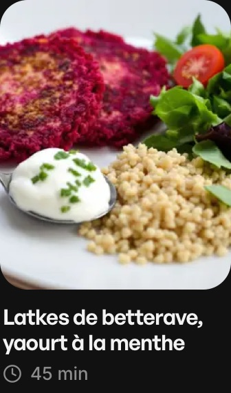

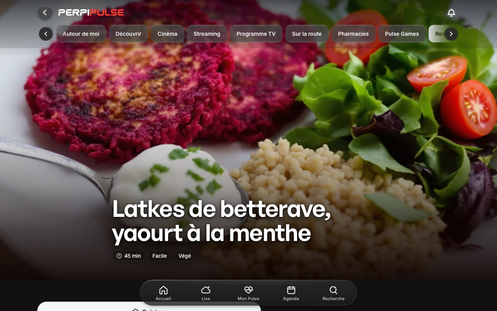
Ce que montrent les cadres
Galettes de betterave, yaourt, jeunes pousses, tomates cerises, boulgour.
Réserve légère : les brins verts posés sur le yaourt se lisent comme de la ciboulette, alors que la fiche met la menthe hachée dans le yaourt.
Les ingrédients de la fiche
- 400 gbetteravecrue, pelée et râpée
- 1œufgros, battu
- 1 c. à s.farine
- 1 gousseailgrosse, râpée
- 1 c. à s.huile de colzasouvent au placard
- 4 c. à s.yaourt grec0 %
- ½ bottementhepetite, feuilles finement hachées
- 150 groquetteen mélange de jeunes pousses
- 130 gtomate cerisecoupées en deux
- 1 c. à c.carvien graines
- ½ c. à c.cuminmoulu
- 1citronle zeste
- 120 gboulgour
Baingan bharta


Ce que montrent les cadres
Purée d'aubergine épicée, coriandre, riz.
Aucune réserve.
Les ingrédients de la fiche
- 1auberginegrosse
- 2 c. à s.huile de tournesolet un peu pour l'aubergine · souvent au placard
- 1oignonfinement haché
- 6 goussesailfinement hachées
- ½ c. à c.piment verthaché
- 2tomatesfinement hachées
- ¼ c. à c.pimenten poudre
- 1 c. à s.coriandrehachée
- selsouvent au placard
- 140 griz basmati
Penne all'arrabbiata


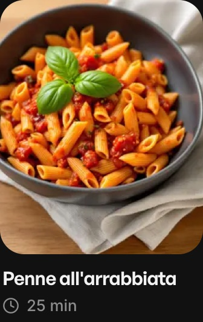

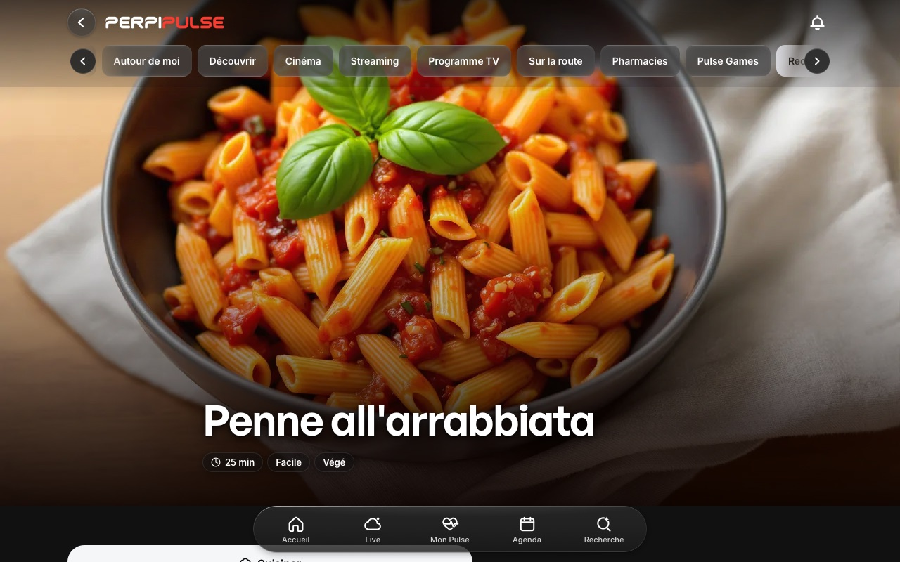
Ce que montrent les cadres
Penne rigate, sauce tomate, basilic, sans fromage.
Aucune réserve.
Les ingrédients de la fiche
- 400 gpâtepenne rigate
- 1 boîtetomate peléeconcassées
- 3 goussesail
- ½ c. à c.pimenten flocons
- ½ c. à c.origansouvent au placard
- ½ bottebasilic
- 4 c. à s.huile d'olivesouvent au placard
- selsouvent au placard
Curry de haricots rouges, riz basmati


Ce que montrent les cadres
Haricots rouges en sauce, coriandre, riz.
Réserve nette : on voit des rondelles de carotte et des dés orange, qui ne sont pas dans la fiche. Photo à remplacer — décision en attente.
Les ingrédients de la fiche
- 2 boîtesharicot rougeégouttés et rincés
- 2 boîtestomate peléeconcassées
- 2oignons
- 4 goussesail
- 20 ggingembrefrais, pelé
- 1 bottecoriandretiges et feuilles
- 2 c. à c.cuminsouvent au placard
- 2 c. à c.paprikasouvent au placard
- 4 c. à c.curryou garam masala · souvent au placard
- 2 c. à s.huile de tournesolsouvent au placard
- 300 griz basmati
- selsouvent au placard
Chili végétarien aux haricots rouges, riz


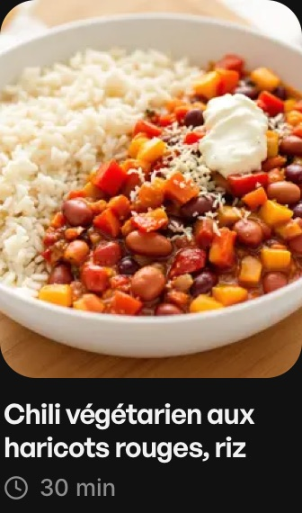

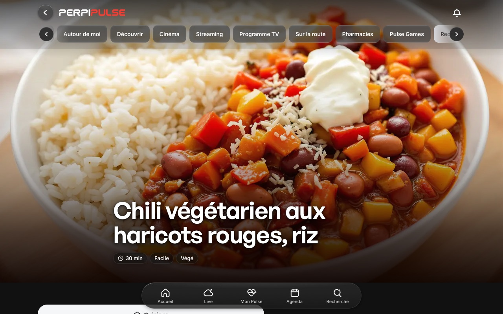
Ce que montrent les cadres
Haricots rouges, poivrons, crème, fromage, riz.
Réserve légère : la crème et le fromage sont facultatifs dans la fiche ; la photo les montre comme s'ils allaient de soi.
Les ingrédients de la fiche
- 2 boîtesharicot rougeégouttés et rincés
- 1 boîtetomate peléeconcassées
- 2poivronsrouge et jaune
- 1oignon
- 2 goussesail
- 1 c. à s.concentré de tomate
- 2 c. à c.cuminsouvent au placard
- 1 c. à c.paprikafumé si possible · souvent au placard
- ½ c. à c.pimenten poudre · souvent au placard
- 2 c. à s.huile d'olivesouvent au placard
- 300 griz long
- selsouvent au placard
- 4 c. à s.crème fraîchefacultatif
- 50 gfromage râpéprésure non animalefacultatif
Ribollita, la soupe toscane au chou et aux haricots


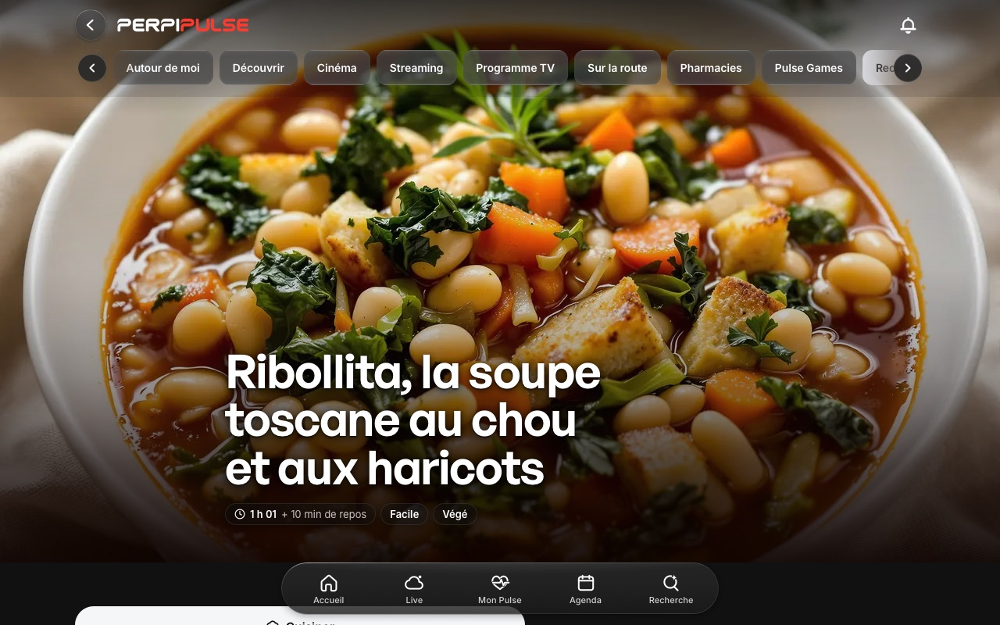
Ce que montrent les cadres
Haricots blancs, chou, carottes, pain, sauce tomate.
Aucune réserve.
Les ingrédients de la fiche
- 2 boîtesharicot blancégouttés et rincés
- 300 gchou vertchou kale ou frisé, sans les côtes
- 6 tranchespainde campagne, rassis
- 1 boîtetomate pelée
- 1oignon
- 2carottes
- 100 gcéleriune branche
- 3 goussesail
- 2 brinsthym
- 1 brinromarin
- 5 c. à s.huile d'olivesouvent au placard
- selsouvent au placard
- poivresouvent au placard